2. Jennie, 84 pontos
Jennie, membro do girl group BLACKPINK
.jpeg)
Para saberem sobre os pontos vão até o Idols Wiki e escolha o seu Idol favorito
1. Lisa, 86 pontos
Lisa, membro do girl group BLACKPINK
2. Jennie, 84 pontos
Jennie, membro do girl group BLACKPINK
3. Jungkook, 82 pontos
Jungkook, membro do boy group BTS
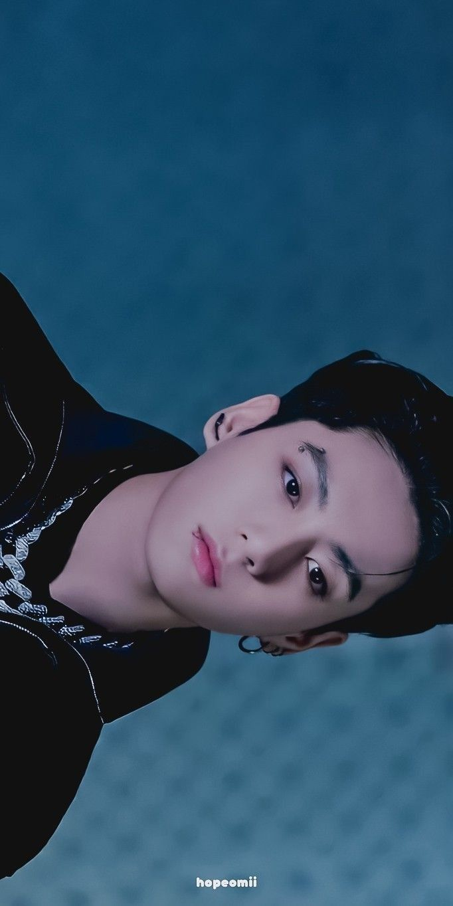
4. Jimin, 77 pontos
Jimin, membro do boy group BTS
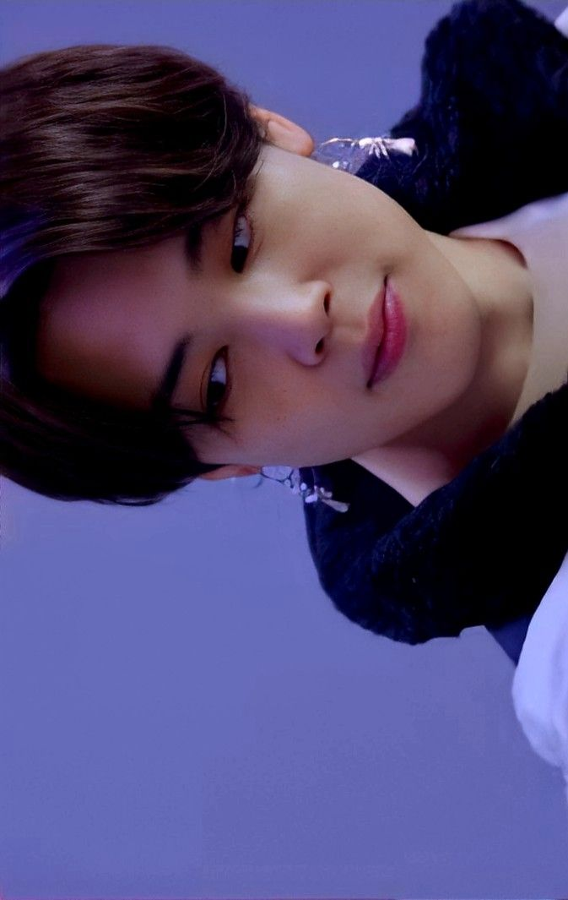
5. Jisoo, 73 pontos
Jisoo, membro do girl group BLACKPINK
6. V, 72 pontos
V, membro do boy group BTS
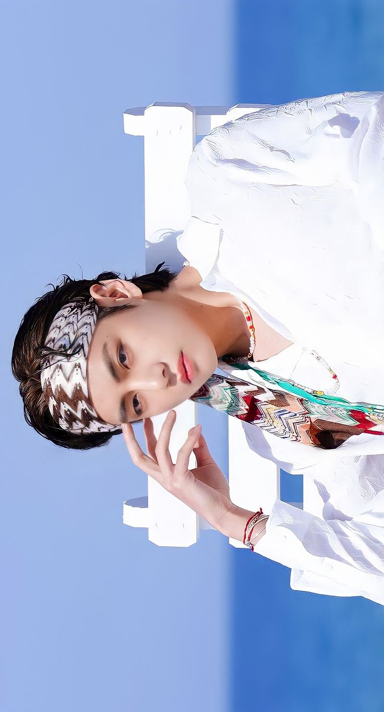
7. Rosé, 71 pontos
Rosé, membro do girl group BLACKPINK
7. Hyunjin, 71 pontos
Hyunjin, membro do boy group Stray Kids
8. J-Hope, 70 pontos
J-hope, membro do boy group BTS
9. Suga, 69 pontos
Suga, membro do boy group BTS
9. Bangchan, 69 pontos
Bangchan, membro do boy group Stray Kids
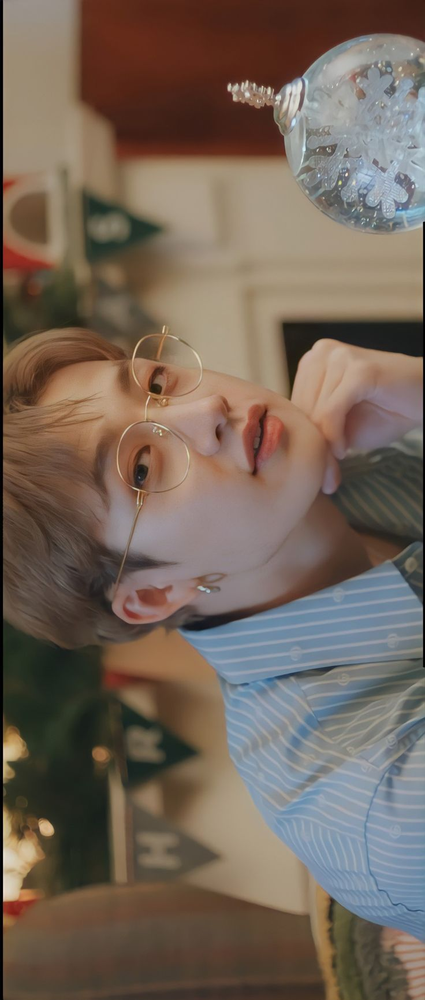
9. Felix, 69 pontos
Felix, membro do boy group Stray Kids
10. Han, 66 pontos
Han, membro do boy group Stray Kids
11. Lee Know, 62 pontos
Lee Know, membro do boy group Stray Kids

12. Chaeyoung, 60 pontos
Chaeyoung, membro do girl group TWICE
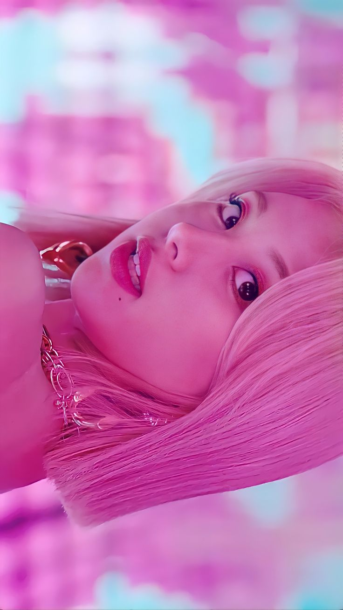
13. Jihyo, 58 pontos
Jihyo, membro do girl group TWICE
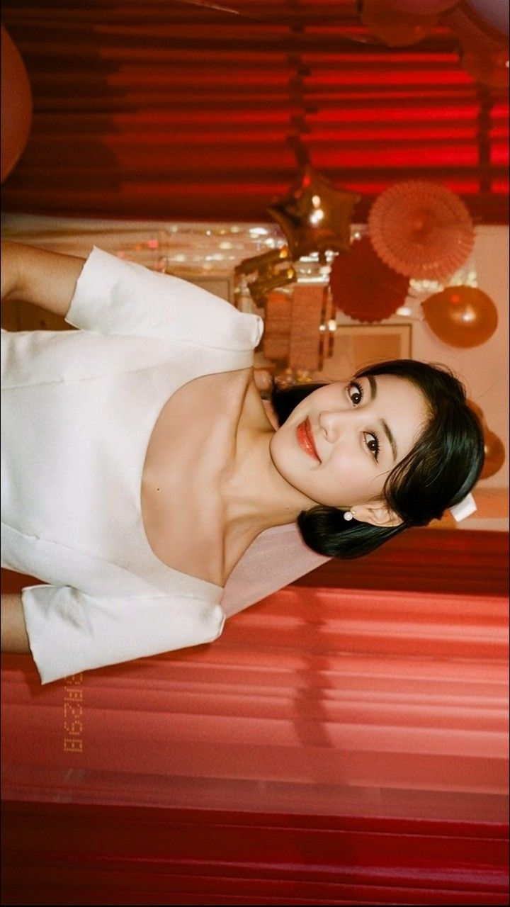
14. RM, 56 pontos
RM, membro do boy group BTS
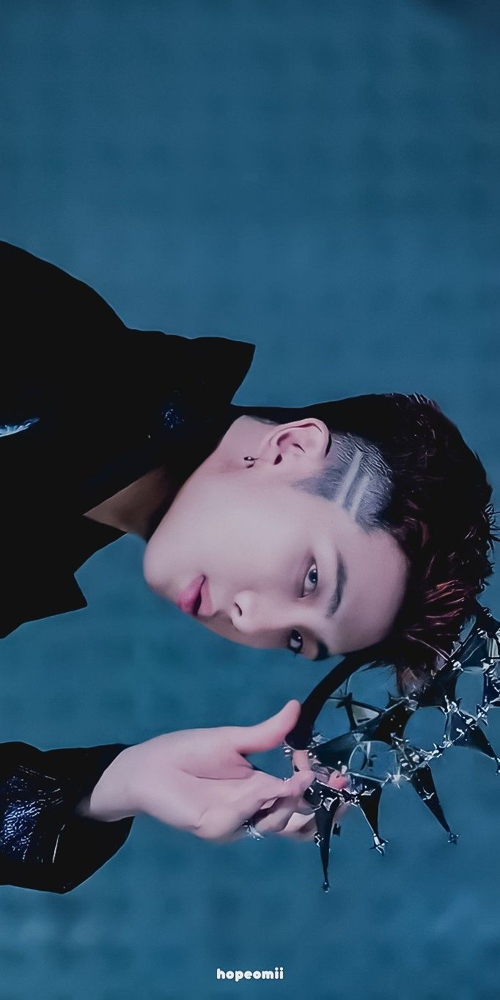
15. Jin, 53 pontos
Jin, membro do boy group BTS
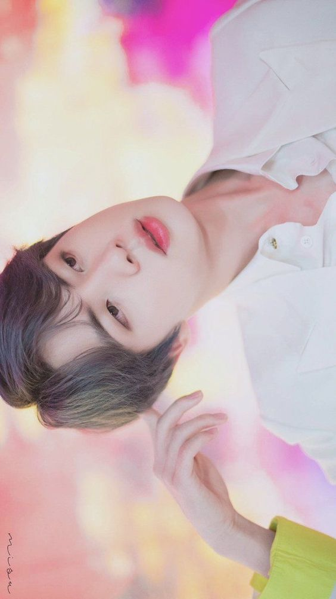
15. Seungmin, 53 pontos
Seungmin, membro do boy group Stray Kids
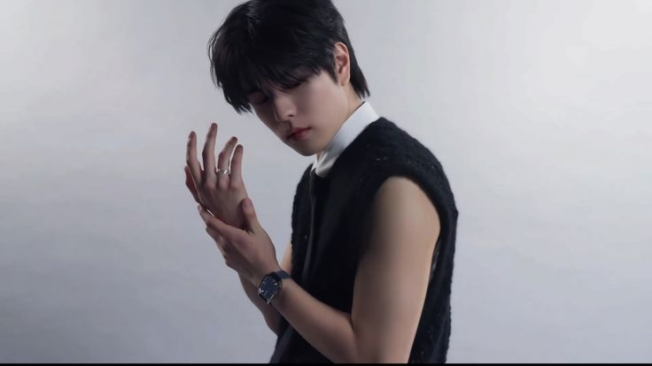
16. Jeongyeon, 51 pontos
Jeongyeon, membro do girl group TWICE
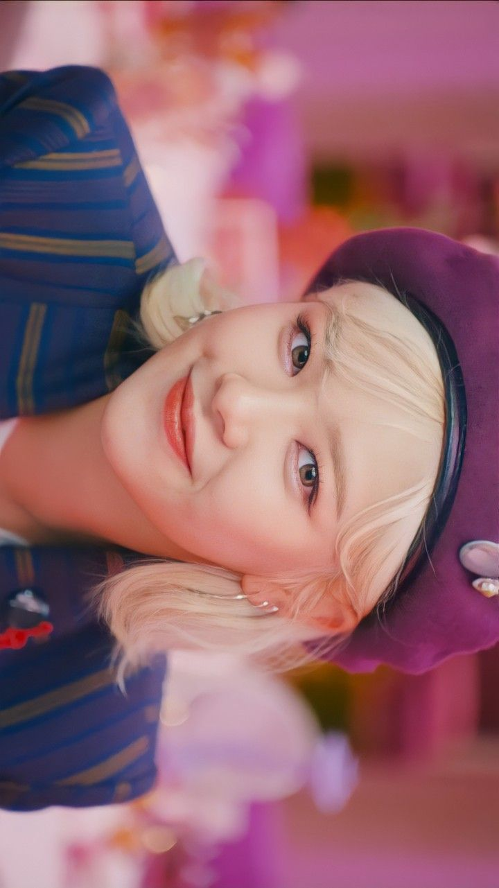
17. Chang bin, 50 pontos
Chang bin, membro do boy group Stray Kids
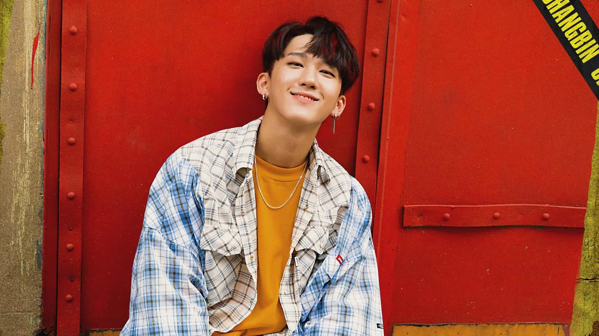